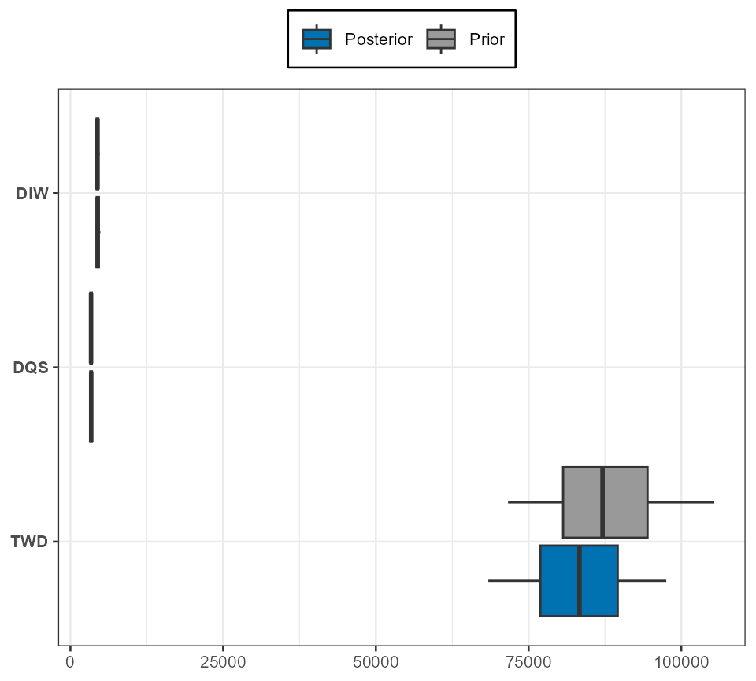

Run SEFRA model
Charles Edwards and Tom Peatman
31 Dec 2025
Source:vignettes/run_model.Rmd
run_model.RmdLoad packages required for data preparation:
library(dplyr)
library(tidyr)
library(kableExtra)
library(sf)
library(ggplot2)
library(sefra)
library(sefraInputs)Prelims
Source data from sefraInputs:
sefra_data("inputsBio")## Loaded data:##
##
## |name |description |created |version | id|
## |:---------|:-----------|:-------------------|:----------------------|--:|
## |inputsBio |reference |2025-03-27 11:25:55 |20250327T112555Z-ed41c | 2|
sefra_data("cryptic_capture_longline")## Loaded data:##
##
## |name |description |created |version | id|
## |:------------------------|:-----------|:-------------------|:----------------------|--:|
## |cryptic_capture_longline |reference |2025-03-27 11:25:55 |20250327T112555Z-240cc | 1|Extract biological data for reference case:
# Import demographic data
N_BP <- inputsBio[["N_BP"]]
S_opt <- inputsBio[["S_opt"]]
A_curr <- inputsBio[["A_curr"]]
P_B <- inputsBio[["P_B"]]
P_nest <- inputsBio[["p_nest"]]
P_southern <- inputsBio[["p_southern"]]The sefraData object
Data are stored in a S4 object of class
sefraData. The sefraData object is a list with
pre-defined components. When assigning data to this list, checks are
made during the assignment to ensure the data are in the correct format
for model input. The sefraData object is initialised using
a call to sefraData(<species>, <identifier>). A
vector of species must be supplied (see ?species for a list
of those available). By defining the species, all subsequent assignments
can be checked for consistency with this species list. An
identifier argument is also allowed, so that different data
configurations can be labelled. In this vignette, we demonstrate how an
sefraData object can be populated and input to a model
run.
First, initialise the data object using three example species:
## species codes input: including all species-dependent capture codes## constructed 'sefraData' objectWhen choosing the species we are assuming that all captures are from
one of these species, even if the capture code recorded in the capture
data refers to a lower taxonomic resolution. In the example below,
captures are also recorded using the generic BLZ code. The
model will assume that genus-, family- or generic-level captures are of
DIW, DQS or TWD; i.e., when
fitting to the data the captures will be predicted from the fishery
overlap with these species only. If generic captures could be of other
species not recorded at the species level, then these species should be
included in the sefraData object. In which case the model
will select a zero probability of observation for that species.
Following initialisation of the sefraData object, the
species names are available using the accessor function:
species_names(sefra_dat)## Species## code common_name scientific_name
## 1 DIW Gibson's albatross Diomedea antipodensis gibsoni
## 2 DQS Antipodean albatross Diomedea antipodensis antipodensis
## 13 TWD New Zealand white-capped albatross Thalassarche cauta steadi
## genus family code_resolution id_species
## 1 Diomedea Diomedeidae species 1
## 2 Diomedea Diomedeidae species 2
## 13 Thalassarche Diomedeidae species 13which can be useful for labeling plots of model diagnostics. Note
that the id_species corresponds to the order recorded in
?species. This numbering is retained throughout, allowing
the data inputs and model outputs to be matched consistently to the
species.
The relevant capture codes are automatically generated from the list of species, and will include the species-level capture codes, but also lower level taxonomic codes. In the current example:
capture_codes(sefra_dat)## 10 capture codes:## (empty captures data frame)## code id_code resolution id_resolution
## 1 DIW 1 species 1
## 2 DQS 2 species 1
## 3 TWD 13 species 1
## 4 DGA 26 complex 2
## 5 DST 29 complex 2
## 6 DWC 32 complex 2
## 7 DIZ 34 genus 3
## 8 THZ 35 genus 3
## 9 ALZ 38 family 4
## 10 BLZ 40 class 5Assign biological data
From the inputsBio data accessed using
sefraInputs::sefra_data(), we assign these to the
sefraData object. Assignment functions are provided for
each data type, and automatically select the required species:
n_breeding_pairs(sefra_dat) <- N_BP
adult_survival(sefra_dat) <- S_opt
p_breeding(sefra_dat) <- P_B
age_breeding(sefra_dat) <- A_curr
p_nest(sefra_dat) <- P_nest
p_southern(sefra_dat) <- P_southernBiological inputs for the number of breeding pairs, the adult
survival, the probability of breeding, and the age at first breeding
should be provided as two-parameter probability density functions. These
can be one of: uniform, beta,
normal, log-normal or
logit-normal (see ?distributions). The input
data frame must contain the column headers distribution,
par1 and par2.
We can view the input data using, for example:
## id_species code distribution par1 par2
## 1 1 DIW log-normal 4425.00 0.050
## 2 2 DQS log-normal 3383.00 0.050
## 3 3 DIX log-normal 10130.00 0.050
## 4 4 DBN weibull 9.25 1710.000
## 5 5 DAM log-normal 60.00 0.100
## 6 6 DIP log-normal 5814.00 0.070
## 7 7 DIQ log-normal 4261.00 0.110
## 8 8 DCR log-normal 26800.00 0.100
## 9 9 TQH log-normal 33988.00 0.100
## 10 10 DIM log-normal 670960.00 0.050
## 11 11 TQW log-normal 14129.00 0.050
## 12 12 DCU log-normal 15335.00 0.100
## 13 13 TWD log-normal 85820.00 0.120
## 14 14 DKS log-normal 35242.00 0.050
## 15 15 DER log-normal 5294.00 0.010
## 16 16 DIC log-normal 63055.00 0.050
## 17 17 DSB log-normal 13493.00 0.050
## 18 18 DNB log-normal 19354.00 0.050
## 19 19 PHU weibull 23.20 13660.000
## 20 20 PHE log-normal 20927.00 0.100
## 21 21 PCI log-normal 105617.00 0.150
## 22 22 PRK log-normal 5456.00 0.057
## 23 23 PCW log-normal 6223.00 0.061
## 24 24 PRO log-normal 1317300.00 0.100
## 25 25 PCN log-normal 42000.00 0.096The assigned model values are:
n_breeding_pairs(sefra_dat)## distribution par1 par2
## DIW log-normal 4425 0.05
## DQS log-normal 3383 0.05
## TWD log-normal 85820 0.12Similarly:
## id_species code distribution par1 par2
## 1 1 DIW beta 0.595 170.00
## 2 2 DQS beta 0.450 91.30
## 3 3 DIX logit-normal 0.494 0.05
## 4 4 DBN beta 0.349 51.30
## 5 5 DAM logit-normal 0.600 0.05
## 6 6 DIP beta 0.531 22.20
## 7 7 DIQ beta 0.531 22.20
## 8 8 DCR beta 0.596 4100.00
## 9 9 TQH logit-normal 0.596 0.05
## 10 10 DIM beta 0.844 174.00
## 11 11 TQW logit-normal 0.900 0.05
## 12 12 DCU logit-normal 0.747 0.05
## 13 13 TWD beta 0.680 63.90
## 14 14 DKS beta 0.821 29.70
## 15 15 DER logit-normal 0.773 0.05
## 16 16 DIC beta 0.406 17.50
## 17 17 DSB beta 0.804 34.90
## 18 18 DNB logit-normal 0.800 0.05
## 19 19 PHU logit-normal 0.730 0.05
## 20 20 PHE beta 0.730 15.80
## 21 21 PCI logit-normal 0.900 0.05
## 22 22 PRK beta 0.610 143.00
## 23 23 PCW beta 0.480 45.40
## 24 24 PRO logit-normal 0.750 0.05
## 25 25 PCN logit-normal 0.797 0.05
p_breeding(sefra_dat)## distribution par1 par2
## DIW beta 0.595 170.0
## DQS beta 0.450 91.3
## TWD beta 0.680 63.9If you wish to use alternate biological data values, please provide
these directly to the project team for inclusion in the
sefraInputs package. This will ensure they are available to
all participants. Centralisation of the data inputs further allows for
consistent cross referencing of different data supplied to different
model runs.
Fisheries and structural data
Fisheries input data are stored in the sefraData object
in three data frames:
- observed captures:
- observed overlap
- commercial (total) overlap
All the supplied data frames should contain the following headers:
-
monthas a character vector and/orid_monthas an integer value between1and12(see?months); -
yeara an integer value; -
fishery_groupas a character vector and/orid_fishery_groupas integer values.
In addition, the captures data frame must include the following field headers:
-
codeas a character vector and/orid_codeas integer values (see?codesfor permitted capture codes); -
n_captures, -
n_captures_aliveand, -
n_captures_deadas integer values.
The overlap data frames should include:
-
speciesas a character vector and/orid_speciesas integer values (see?speciesfor permitted capture codes); -
species_groupas a character vector and/orid_species_groupas integer values; -
celland/orid_cellas an integer value between1and1224, this being the number of 5x5 degree cells in the southern hemisphere. For assignment of data to cells, please see the documentation for thesefraInputspackage.
All months are referenced using an integer value between
1 and 12. This is true regardless of whether a
character vector is supplied. Similarly, all species are referenced
using an integer value between 1 and 25, and this
id_species value is retained throughout the assessment. The
capture code is referenced using an integer value for
id_code between 1 and 40, which is similarly
retained throughout the assessment and will be consistent across
different model runs or data constructs. If you wish to included
additional species or capture codes please contact the project team.
There are no fixed reference values for the fishery group or species
group, since these are dependent on the analysis and must be provided by
the investigator (see the vignette for sefraInputs).
Assignment functions are provided for the species group and fishery
group. These represent structural assumptions and must be supplied to
the sefraData object before the overlap and capture data
frames. This two-step process facilitates checking of the data.
To illustrate, we first create some artificial data, as three
separate data frames: captures_o, overlap_o
and overlap_t.
| n_captures | cell | year | code | month | flag | n_captures_alive | n_captures_dead | id_month | id_fishery_group |
|---|---|---|---|---|---|---|---|---|---|
| 0 | 708 | 2016 | DQS | Jun | F1 | 0 | 0 | 6 | 1 |
| 0 | 691 | 2018 | DQS | Jun | F1 | 0 | 0 | 6 | 1 |
| 1 | 684 | 2008 | DIW | Mar | F1 | 0 | 1 | 3 | 1 |
| 0 | 687 | 2007 | TWD | Jan | F1 | 0 | 0 | 1 | 1 |
| 0 | 688 | 2012 | DQS | Dec | F2 | 0 | 0 | 12 | 2 |
| 0 | 770 | 2020 | BLZ | Aug | F2 | 0 | 0 | 8 | 2 |
| id_species | id_month | id_fishery_group | id_species_group | year | cell | overlap |
|---|---|---|---|---|---|---|
| 2 | 6 | 1 | 2 | 2016 | 708 | 0.0004098 |
| 2 | 6 | 1 | 2 | 2018 | 691 | 0.0002191 |
| 1 | 3 | 1 | 1 | 2008 | 684 | 0.0003939 |
| 13 | 1 | 1 | 3 | 2007 | 687 | 0.0005376 |
| 2 | 12 | 2 | 2 | 2012 | 688 | 0.0008761 |
| 2 | 8 | 2 | 2 | 2020 | 770 | 0.0008146 |
| id_species | id_month | id_fishery_group | id_species_group | year | cell | overlap |
|---|---|---|---|---|---|---|
| 2 | 6 | 1 | 2 | 2016 | 708 | 0.0008923 |
| 2 | 6 | 1 | 2 | 2018 | 691 | 0.0007787 |
| 1 | 3 | 1 | 1 | 2008 | 684 | 0.0002149 |
| 13 | 1 | 1 | 3 | 2007 | 687 | 0.0004784 |
| 2 | 12 | 2 | 2 | 2012 | 688 | 0.0007050 |
| 2 | 8 | 2 | 2 | 2020 | 770 | 0.0001145 |
Functions are provided to assign structural assumptions based on the input data frames. For example, we can assign fishery groups using:
fishery_groups(sefra_dat) <- captures_o
fishery_groups(sefra_dat)## 2 fishery groups## fishery_group id_fishery_group
## 1 fishery_1 1
## 2 fishery_2 2This does not assign any actual data. It only extracts structural
information from the data captures_o data frame. Structural
assumptions can also be provided as character vectors. In this case,
care must be taken to ensure the values match the values in the
corresponding input data frames. To specify species groups for example,
we could use:
species_groups(sefra_dat) <- c('group_1', 'group_2', 'group_3')The same results could be achieved by assigning a data frame directly, which is the recommended approach. In this case:
species_groups(sefra_dat) <- overlap_o
species_groups(sefra_dat)## 3 species groups## species_group id_species_group
## 1 group_1 1
## 2 group_2 2
## 3 group_3 3When examining the species group assignments to each species, we can use:
species_groups(sefra_dat, print_species = TRUE)## 3 species groups## (with 3 species)## species species_group id_species id_species_group
## 1 DIW group_1 1 1
## 2 DQS group_2 2 2
## 3 TWD group_3 13 3The data frames themselves can then be assigned. In the first instance, overlap and captures data are provided:
## Prepared observer captures and overlap dataIn this case, two separate data frames are supplied to the
data_prep() function. Multiple, data frame can be provided,
as long as the referencing is consistent. It is the presence of captures
(i.e., n_captures) in at least one of the data frames that
identifies the data as observed. Otherwise it is treated as commercial
overlap data.
Following assignment of capture data, the captures per code can be viewed using:
capture_codes(sefra_dat)## 10 capture codes:## Joining with `by = join_by(id_code)`## code id_code resolution id_resolution captures
## 1 DIW 1 species 1 27
## 2 DQS 2 species 1 26
## 3 TWD 13 species 1 23
## 4 DGA 26 complex 2 0
## 5 DST 29 complex 2 0
## 6 DWC 32 complex 2 0
## 7 DIZ 34 genus 3 21
## 8 THZ 35 genus 3 10
## 9 ALZ 38 family 4 0
## 10 BLZ 40 class 5 21or by taxonomic resolution using:
capture_resolutions(sefra_dat)## 10 capture code resolutions:## Joining with `by = join_by(id_fishery_group, id_code)`## id_fishery_group id_resolution resolution captures
## 1 1 1 complex 0
## 2 1 1 species 12
## 3 1 2 genus 10
## 4 1 2 species 13
## 5 1 3 genus 3
## 6 1 3 species 11
## 7 1 4 complex 0
## 8 1 4 family 0
## 9 1 5 class 13
## 10 1 5 complex 0
## 11 2 1 complex 0
## 12 2 1 species 15
## 13 2 2 genus 11
## 14 2 2 species 13
## 15 2 3 genus 7
## 16 2 3 species 12
## 17 2 4 complex 0
## 18 2 4 family 0
## 19 2 5 class 8
## 20 2 5 complex 0In the latter case, captures are disaggregated by fishery group.
To assign the commercial overlap data use:
## Prepared commercial (total) overlap dataTo check the data have loaded correctly we can view the object:
sefra_dat## 'sefraData' class object:## Species## code common_name scientific_name
## 1 DIW Gibson's albatross Diomedea antipodensis gibsoni
## 2 DQS Antipodean albatross Diomedea antipodensis antipodensis
## 13 TWD New Zealand white-capped albatross Thalassarche cauta steadi
## genus family code_resolution id_species
## 1 Diomedea Diomedeidae species 1
## 2 Diomedea Diomedeidae species 2
## 13 Thalassarche Diomedeidae species 13## 3 species groups## (with 3 species)## species species_group id_species id_species_group
## 1 DIW group_1 1 1
## 2 DQS group_2 2 2
## 3 TWD group_3 13 3## 2 fishery groups## fishery_group id_fishery_group
## 1 fishery_1 1
## 2 fishery_2 2## 10 capture codes:## Joining with `by = join_by(id_code)`## code id_code resolution id_resolution captures
## 1 DIW 1 species 1 27
## 2 DQS 2 species 1 26
## 3 TWD 13 species 1 23
## 4 DGA 26 complex 2 0
## 5 DST 29 complex 2 0
## 6 DWC 32 complex 2 0
## 7 DIZ 34 genus 3 21
## 8 THZ 35 genus 3 10
## 9 ALZ 38 family 4 0
## 10 BLZ 40 class 5 21## Captures data frame:## # A tibble: 78 × 6
## captures_k captures_live_k captures_dead_k code_k month_k fishery_group_k
## <int> <int> <int> <int> <int> <int>
## 1 1 1 0 1 1 1
## 2 1 1 0 1 2 1
## 3 2 1 1 1 3 1
## 4 1 1 0 1 5 1
## 5 2 1 1 1 6 1
## 6 1 1 0 1 7 1
## 7 1 1 0 1 10 1
## 8 1 0 1 1 11 1
## 9 2 1 1 1 12 1
## 10 3 2 1 1 1 2
## # ℹ 68 more rows## Observed overlap data frame:## # A tibble: 72 × 5
## overlap_i species_i species_group_i month_i fishery_group_i
## <dbl> <int> <int> <int> <int>
## 1 0.00776 1 1 1 1
## 2 0.00139 1 1 2 1
## 3 0.00568 1 1 3 1
## 4 0.00831 1 1 4 1
## 5 0.00541 1 1 5 1
## 6 0.00697 1 1 6 1
## 7 0.00956 1 1 7 1
## 8 0.00770 1 1 8 1
## 9 0.00740 1 1 9 1
## 10 0.00486 1 1 10 1
## # ℹ 62 more rows## Commercial overlap data frame:## # A tibble: 962 × 5
## overlap_j species_j species_group_j month_j fishery_group_j
## <dbl> <int> <int> <int> <int>
## 1 0.000384 1 1 1 1
## 2 0.000196 1 1 1 1
## 3 0.000258 1 1 1 1
## 4 0.0000644 1 1 1 1
## 5 0.000763 1 1 1 1
## 6 0.000477 1 1 1 1
## 7 0.000584 1 1 1 1
## 8 0.000653 1 1 1 1
## 9 0.000618 1 1 1 1
## 10 0.000430 1 1 1 1
## # ℹ 952 more rowsCaptures and overlap data can also be extracted using, respectively:
captures(sefra_dat)## # A tibble: 78 × 6
## captures_k captures_live_k captures_dead_k code_k month_k fishery_group_k
## <int> <int> <int> <int> <int> <int>
## 1 1 1 0 1 1 1
## 2 1 1 0 1 2 1
## 3 2 1 1 1 3 1
## 4 1 1 0 1 5 1
## 5 2 1 1 1 6 1
## 6 1 1 0 1 7 1
## 7 1 1 0 1 10 1
## 8 1 0 1 1 11 1
## 9 2 1 1 1 12 1
## 10 3 2 1 1 1 2
## # ℹ 68 more rows
overlap(sefra_dat)## $observer
## # A tibble: 72 × 5
## overlap_i species_i species_group_i month_i fishery_group_i
## <dbl> <int> <int> <int> <int>
## 1 0.00776 1 1 1 1
## 2 0.00139 1 1 2 1
## 3 0.00568 1 1 3 1
## 4 0.00831 1 1 4 1
## 5 0.00541 1 1 5 1
## 6 0.00697 1 1 6 1
## 7 0.00956 1 1 7 1
## 8 0.00770 1 1 8 1
## 9 0.00740 1 1 9 1
## 10 0.00486 1 1 10 1
## # ℹ 62 more rows
##
## $fishery
## # A tibble: 962 × 5
## overlap_j species_j species_group_j month_j fishery_group_j
## <dbl> <int> <int> <int> <int>
## 1 0.000384 1 1 1 1
## 2 0.000196 1 1 1 1
## 3 0.000258 1 1 1 1
## 4 0.0000644 1 1 1 1
## 5 0.000763 1 1 1 1
## 6 0.000477 1 1 1 1
## 7 0.000584 1 1 1 1
## 8 0.000653 1 1 1 1
## 9 0.000618 1 1 1 1
## 10 0.000430 1 1 1 1
## # ℹ 952 more rowsCryptic capture
Cryptic capture distribution parameters are defined by species group and fishery group, and can be assigned as follows:
cryptic_capture(sefra_dat) <- cryptic_capture_longline## 2 fishery groups## 3 species groups
cryptic_capture(sefra_dat)## distribution fishery_group species_group par value
## 1 log-normal fishery_1 group_1 par1 1.420
## 2 log-normal fishery_2 group_1 par1 1.420
## 3 log-normal fishery_1 group_2 par1 1.420
## 4 log-normal fishery_2 group_2 par1 1.420
## 5 log-normal fishery_1 group_3 par1 1.420
## 6 log-normal fishery_2 group_3 par1 1.420
## 7 log-normal fishery_1 group_1 par2 0.186
## 8 log-normal fishery_2 group_1 par2 0.186
## 9 log-normal fishery_1 group_2 par2 0.186
## 10 log-normal fishery_2 group_2 par2 0.186
## 11 log-normal fishery_1 group_3 par2 0.186
## 12 log-normal fishery_2 group_3 par2 0.186At present, only a log-normal distribution is allowed.
Values stored in the the cryptic_capture_longline object
represent the authors best understanding of cryptic capture in longline
fisheries, but can be adjusted as required by the user. We have
stratified the cryptic captures assumption by species group, because we
are currently not aware of any information that would allow a higher
resolution.
Example model run
First, source and compile the model code:
sefra_mdl <- sefraModel(sefra_dat)## SEFRA-seabird model v3.0.1The sefraModel() function can optionally be supplied
with the sefraData-class object as an argument. If
commercial overlap is missing from the data, then predicted captures,
deaths and risk are not calculated by the model. Only catchabilities and
fits to the observed captures will be generated. This will lower the
memory requirements for the model and may be useful for initial
model-based explorations of the data.
Note that a custom model can also be provided to
sefraModel(). In this instance we recommend first calling
sefraModel(write_to = <file>) to write the
stan code as a text file. This base code can then be
modified by the user and re-compiled using
sefraModel(read_from = <file>).
The sefraModel-class object will contain the initial
values. These can be updated using initial_values() to
generate a maximum posterior density estimate. To check initial
values:
sefra_mdl <- initial_values(sefra_dat, sefra_mdl)## initial model fit ✔This can be useful for quickly exploring the structural assumptions of the model, and whether reasonable fits to the data are obtained. Typically, structural mis-specification of the species and fishery groups, or a deficiency in the data, will lead to stronger prior updates on the biological parameters.
When fitting, the model attempts to reconstruct the number of
captures by estimating the catchabilities and observation probabilities
according to the structural assumptions implemented by the user. In
addition to estimating direct fits to the data, the model also
calculates the cumulative sum of the captures, which can be used to
examine whether the total number of captures per taxonomic group is
being accurately predicted. In particular, we would hope that the total
number of captures across all taxonomic groups is accuratly predicted by
the model, which can be determined from the models ability to predict
the cumulative sum of BLZ captures.
To calculate the cumulative sum of the capture data, captures are summed per fishery group and capture code. Following summation, capture codes represent all captures at that taxonomic resolution or higher. For example, using the current data, the captures per capture code and fishery group are represented within the model as a two-dimensional matrix, with the fishery groups along the first dimension:
## `summarise()` has grouped output by 'id_fishery_group'. You can override using
## the `.groups` argument.
## Joining with `by = join_by(id_fishery_group, code)`## DIW DQS TWD DGA DST DWC DIZ THZ ALZ BLZ
## fishery_1 12 13 11 0 0 0 10 3 0 13
## fishery_2 15 13 12 0 0 0 11 7 0 8The cumulative sum (or “inclusive sum”) of the capture codes used for fitting the model are:
## DIW DQS TWD DGA DST DWC DIZ THZ ALZ BLZ
## fishery_1 12 13 11 25 11 25 35 14 49 62
## fishery_2 15 13 12 28 12 28 39 19 58 66For the BLZ capture code, there are 21 captures recorded
as BLZ in the empirical data, but a total of 128
BLZ captures when summed across captures recorded as
BLZ or a higher taxonomic resolution. We refer to 21 as the
empirical captures and 128 as the inclusive
captures. Similarly for DIZ we have 21
empirical captures and 74 inclusive captures.
This definition of inclusive captures is relevant to the
model fit and downstream diagnostics.
Model run
Sample from the posterior using the $sampling() function
from cmdstanr:
sefra_mdl <- sampler(sefra_dat, sefra_mdl, chains = 2, parallel_chains = 2, iter_warmup = 1000, iter_sampling = 1000, threads_per_chain = 2)The different scales on which biological parameters are estimated can
make it difficult for the MCMC chain to explore the full parameter
space, and the user may therefore wish to adjust the
adapt_delta, stepsize or
max_treedepth control parameters. We further recommend that
uniform priors should only be used for
p_breeding and adult_survival (if at all) and
not for n_breeding_pairs or age_breeding.
Functions exist to extract and summarise relevant model outputs, to allow the user to create their own diagnostic plots and tables:
sefra_out <- sefraOutputs(sefra_dat, sefra_mdl)## constructed 'sefraOutputs' object ✔
out_summary <- summary(sefra_out)| species | mean | mq | lq | uq |
|---|---|---|---|---|
| DIW | 306.7724 | 303.7025 | 229.7858 | 403.6591 |
| DQS | 285.8586 | 280.6301 | 207.6187 | 390.3796 |
| TWD | 6662.0626 | 6533.0709 | 4318.3926 | 9876.8959 |
| species | mean | mq | lq | uq |
|---|---|---|---|---|
| DIW | 0.0089556 | 0.0087423 | 0.0054751 | 0.0140560 |
| DQS | 0.0105234 | 0.0101956 | 0.0058968 | 0.0173810 |
| TWD | 0.0004815 | 0.0004625 | 0.0002683 | 0.0008196 |
Model diagnostics
Trace plots can be used to visualise convergence. For example, we can plot trace diagnostics for the biological parameters using, for example:
trace_plot(sefra_mdl, pars = c("p_breeding"), labels = list(species = paste0("P[", sefra_dat$species, "]")))
#trace_plot(mdl_fit, pars = c("age_breeding"), labels = list(species = paste0("alpha[", sefra_dat$species, "]")))
#trace_plot(mdl_fit, pars = c("adult_survival"), labels = list(species = paste0("S[", sefra_dat$species, "]")))
#trace_plot(mdl_fit, pars = c("n_breeding_pairs"), labels = list(species = paste0("N[", sefra_dat$species, "]")))the probabilities of observation:
trace_plot(sefra_mdl, pars = c("p_obs_logit"), labels = list(fishery_group = sefra_dat$fishery_groups, pi = paste("pi[", 1:sefra_dat$n_pi, "]"), resolution = as.character(unique(sefra_dat$resolutions))))
or the catchabilities:
trace_plot(sefra_mdl, pars = "q", labels = list(fishery_group = sefra_dat$fishery_groups, species_group = sefra_dat$species_groups))
To visualise prior updates to the biological input distributions, we use, for example:
plot_prior_update(sefra_mdl, par = "n_breeding_pairs", species_labels = as.character(sefra_dat$species))
Only one biological parameter can be included per box-plot.
Diagnostic plots also exist for Rhat and Neff. For example:
par_labels <- expression(alpha[1][","][1], alpha[2][","][1], alpha[1][","][2], alpha[2][","][2], alpha[1][","][3], alpha[2][","][3])
plot_rhat(get_traces(sefra_mdl, pars = c("alpha_species_group"), dimnames = list(fishery_group = sefra_dat$fishery_groups, species_group = sefra_dat$species_groups))[[1]], labels = par_labels)
plot_neff(get_traces(sefra_mdl, pars = c("alpha_species_group"), dimnames = list(fishery_group = sefra_dat$fishery_groups, species_group = sefra_dat$species_groups))[[1]], labels = par_labels)
Perhaps the most useful diagnostic is provided from examination of fits to the capture data, and a specific function exists for this purpose:
captures(sefra_dat, sefra_mdl)## $captures
## # A tibble: 20 × 7
## fishery_group code captures hat_mean hat_mq hat_lq hat_uq
## <chr> <chr> <int> <dbl> <dbl> <dbl> <dbl>
## 1 fishery_1 DIW 12 8.46 8 2 17
## 2 fishery_1 DQS 13 9.03 9 3 18
## 3 fishery_1 TWD 11 6.85 6 1 14
## 4 fishery_1 DGA 0 1.44 1 0 5
## 5 fishery_1 DST 0 1.97 2 0 6
## 6 fishery_1 DWC 0 1.45 1 0 5
## 7 fishery_1 DIZ 10 10.5 10 3 20
## 8 fishery_1 THZ 3 3.92 4 0 10
## 9 fishery_1 ALZ 0 4.52 4 0 11
## 10 fishery_1 BLZ 13 13.8 13 5 25
## 11 fishery_2 DIW 15 10.3 10 3 20
## 12 fishery_2 DQS 13 8.93 9 2 18
## 13 fishery_2 TWD 12 8.19 8 2 16
## 14 fishery_2 DGA 0 1.46 1 0 5
## 15 fishery_2 DST 0 2.19 2 0 7
## 16 fishery_2 DWC 0 1.48 1 0 5
## 17 fishery_2 DIZ 11 11.4 11 4 21
## 18 fishery_2 THZ 7 6.51 6 1 14
## 19 fishery_2 ALZ 0 4.66 4 0 11.0
## 20 fishery_2 BLZ 8 10.7 10 4 20
##
## $captures_inclusive
## # A tibble: 20 × 7
## fishery_group code captures hat_mean hat_mq hat_lq hat_uq
## <chr> <chr> <int> <dbl> <dbl> <dbl> <dbl>
## 1 fishery_1 DIW 12 8.48 8 2 17
## 2 fishery_1 DQS 13 9.01 9 2 18.0
## 3 fishery_1 TWD 11 6.74 6 1 14
## 4 fishery_1 DGA 25 18.9 18 9 32
## 5 fishery_1 DST 11 8.79 8 2 18
## 6 fishery_1 DWC 25 20.2 20 10 33
## 7 fishery_1 DIZ 35 30.8 30 17 48
## 8 fishery_1 THZ 14 12.7 12 5 23
## 9 fishery_1 ALZ 49 48.1 48 30 69
## 10 fishery_1 BLZ 62 62.1 62 41 87
## 11 fishery_2 DIW 15 10.3 10 3 20
## 12 fishery_2 DQS 13 8.89 8 3 18
## 13 fishery_2 TWD 12 8.19 8 2 17
## 14 fishery_2 DGA 28 20.8 20 10 35
## 15 fishery_2 DST 12 10.4 10 4 19.0
## 16 fishery_2 DWC 28 22.1 21 11 36
## 17 fishery_2 DIZ 39 33.5 33 20 51
## 18 fishery_2 THZ 19 16.9 16 7 29
## 19 fishery_2 ALZ 58 54.9 54 37 76
## 20 fishery_2 BLZ 66 65.8 65 45 89Further diagnostic are provided in an accompanying vignette.
To reconstruct maps, we can use values stored in the
sefraOutputs object.
# reconstruct maps
map_deaths <- sefra_out$predicted_deaths %>% group_by(iter, species, cell) %>% summarise(value = sum(value)) %>% group_by(species, cell) %>% summarise(value = median(value))## `summarise()` has grouped output by 'iter', 'species'. You can override using
## the `.groups` argument.
## `summarise()` has grouped output by 'species'. You can override using the
## `.groups` argument.
map_deaths <- sefraInputs::grid %>% left_join(map_deaths, by = c("id_cell" = "cell")) %>% filter(!is.na(species))
ggplot(map_deaths) + geom_sf(data = sefraInputs::grid)+ geom_sf(data = sefraInputs::southern_map) + geom_sf(aes(fill = value), col = NA) + facet_wrap(~species) + guides(fill = "none")